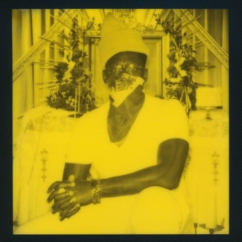
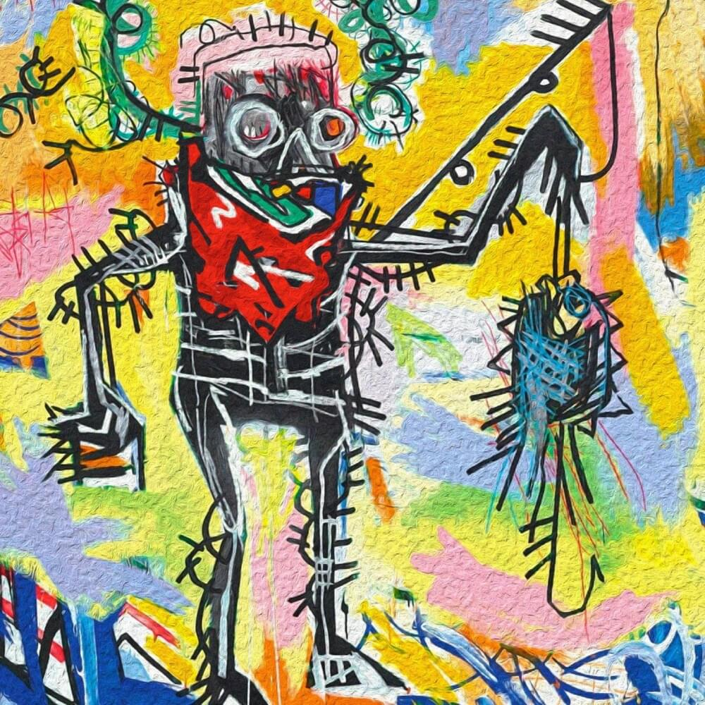
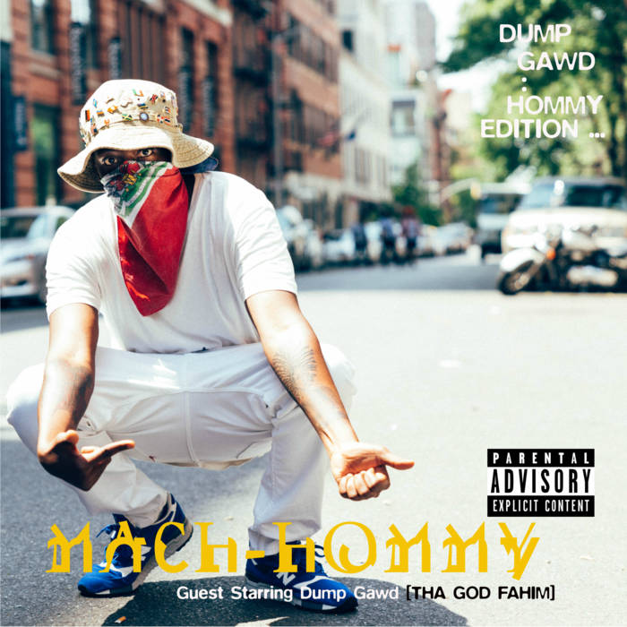

Mach-Hommy is a highly revered rapper known for his poetic lyricism and mystique. Deeply connected to his Haitian roots, his music is layered with history, pride, and linguistic complexity. From dropping limited-run releases to keeping his face concealed, Mach lets the art speak for itself.

Balens Cho (Hot Candles)
Pray For Haiti
Dump Gawd: Hommy Edition